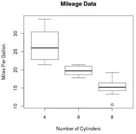
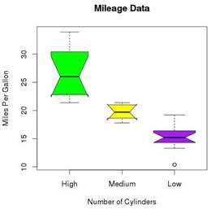

Boxplots are a measure of how well distributed is the data in a data set. It divides the data set into three quartiles. This graph represents the minimum, maximum, median, first quartile and third quartile in the data set. It is also useful in comparing the distribution of data across data sets by drawing boxplots for each of them.
Boxplots are created in R by using the boxplot() function.
Syntax
The basic syntax to create a boxplot in R is –
boxplot(x, data, notch, varwidth, names, main)
Following is the description of the parameters used –
1. x is a vector or a formula.
2. data is the data frame.
3. notch is a logical value. Set as TRUE to draw a notch.
4. varwidth is a logical value. Set as true to draw width of the box proportionate to the sample size.
5. names are the group labels which will be printed under each boxplot.
6. main is used to give a title to the graph.
Example
We use the data set "mtcars" available in the R environment to create a basic boxplot. Let's look at the columns "mpg" and "cyl" in mtcars.
input <- mtcars[,c('mpg','cyl')]
print(head(input))
When we execute above code, it produces following result –
mpg cyl
Mazda RX4 21.0 6
Mazda RX4 Wag 21.0 6
Datsun 710 22.8 4
Hornet 4 Drive 21.4 6
Hornet Sportabout 18.7 8
Valiant 18.1 6
Creating the Boxplot
The below script will create a boxplot graph for the relation between mpg (miles per gallon) and cyl (number of cylinders).
# Give the chart file a name.
png(file = "boxplot.png")
# Plot the chart.
boxplot(mpg ~ cyl, data = mtcars, xlab = "Number of Cylinders",
ylab = "Miles Per Gallon", main = "Mileage Data")
# Save the file.
dev.off()
When we execute the above code, it produces the following result –

Boxplot with Notch
We can draw boxplot with notch to find out how the medians of different data groups match with each other.
The below script will create a boxplot graph with notch for each of the data group.
# Give the chart file a name.
png(file = "boxplot_with_notch.png")
# Plot the chart.
boxplot(mpg ~ cyl, data = mtcars,
xlab = "Number of Cylinders",
ylab = "Miles Per Gallon",
main = "Mileage Data",
notch = TRUE,
varwidth = TRUE,
col = c("green","yellow","purple"),
names = c("High","Medium","Low")
)
# Save the file.
dev.off()
When we execute the above code, it produces the following result –
